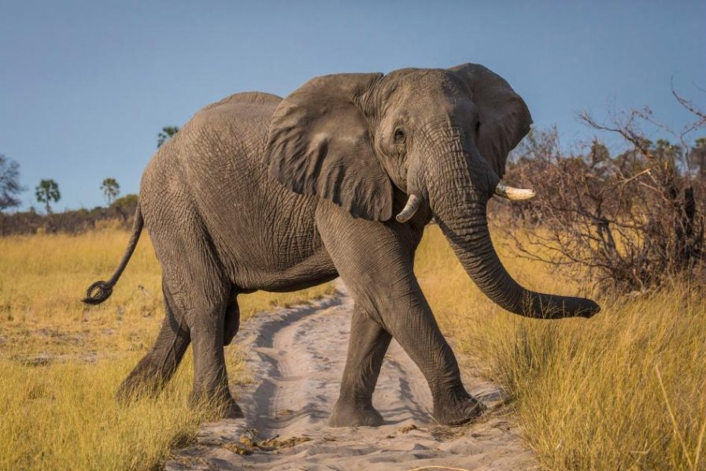
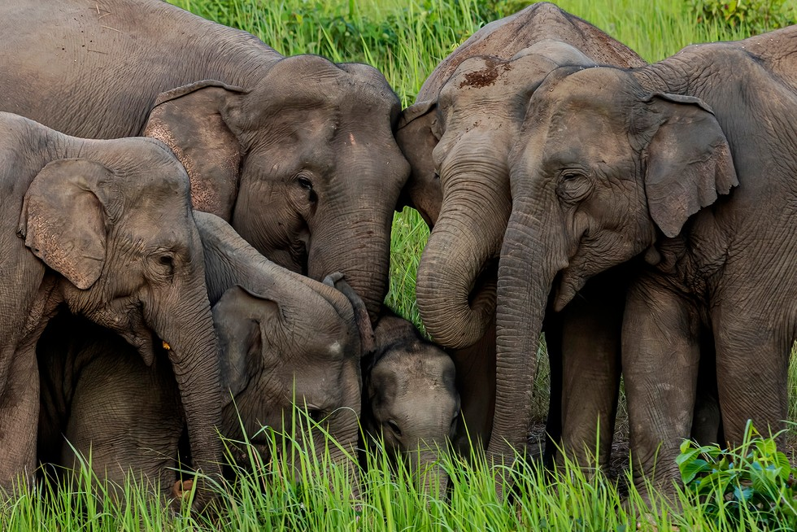
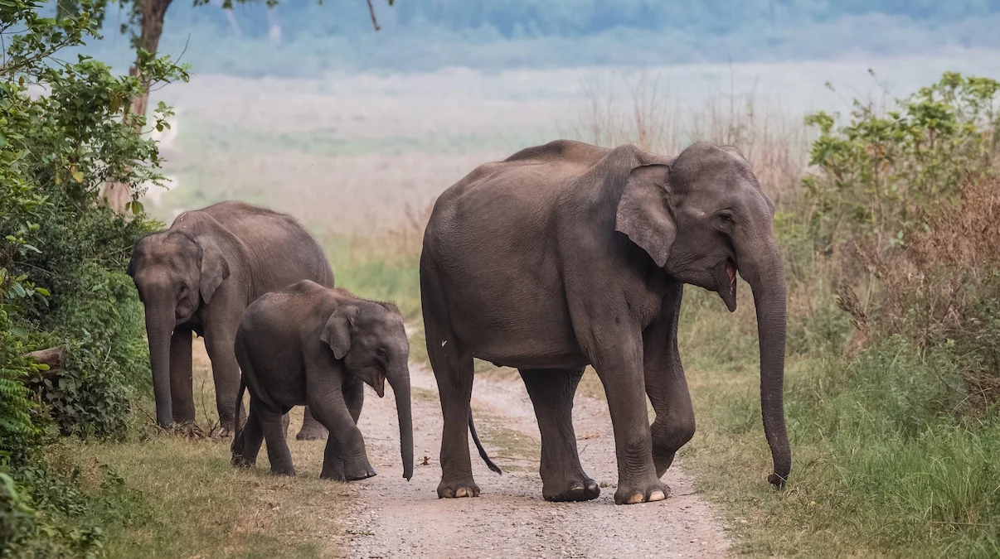

Elephants are the largest land mammals on Earth, and they are also one of the most intelligent and social animals. They are found in Africa and Asia, and they play an important role in their ecosystems.
Elephants are herbivores, and they eat a variety of plants, including grasses, leaves, fruits, and bark. They drink a lot of water, and they can go for days without food, but only a few hours without water.
Elephants are very social animals, and they live in herds of up to 100 individuals. The herds are led by a matriarch, who is the oldest and most experienced female. The matriarch is responsible for leading the herd to food and water, and she also teaches the younger elephants how to survive.
Elephants are very intelligent animals, and they have been shown to be capable of using tools, solving problems, and communicating with each other. They also have a strong sense of family, and they will often go to great lengths to protect their young.
Unfortunately, elephants are facing a number of threats, including poaching, habitat loss, and conflict with humans. Poaching is the biggest threat to elephants, and it is estimated that over 20,000 elephants are killed each year for their ivory tusks. Habitat loss is also a major problem, as elephants need large areas of land to roam and forage. And conflict with humans can occur when elephants raid crops or enter human settlements.
There are a number of things that can be done to help elephants, including:
Elephants are amazing creatures, and they deserve our protection. By taking action to help elephants, we can ensure that these gentle giants continue to roam the Earth for generations to come.
Here are some additional facts about elephants:
Elephants are truly amazing creatures, and they play an important role in our world. We must do everything we can to protect them and ensure their survival.